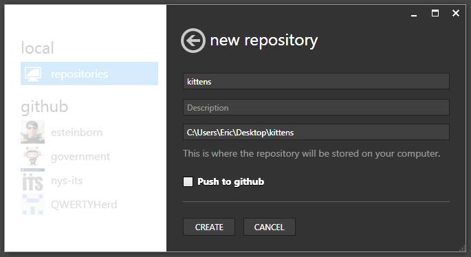
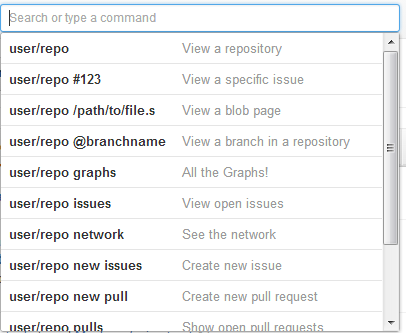
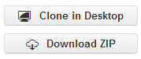
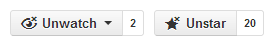
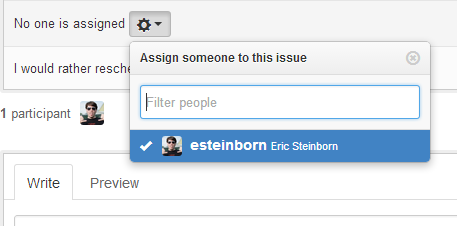
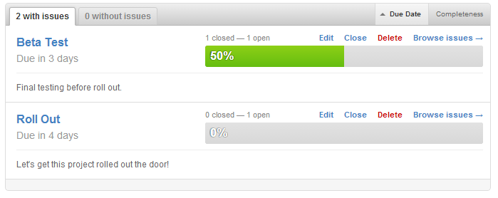
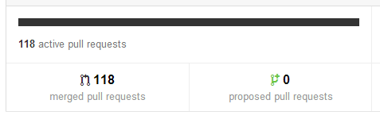
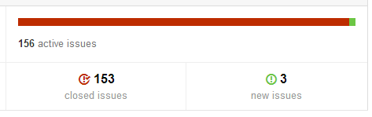
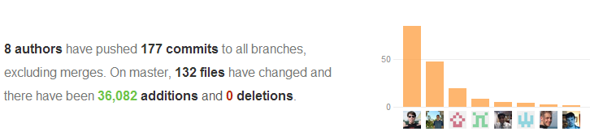

GitHub for Cats!

What is GitHub Anyway?
Collaborative medium for hosting projects.
Make them public or keep them private.
Cutting edge social coding platform.
What is GitHub Anyway?
GitHub is the new standard for project development.
- 5.5 million developers
- 16.4 million hosted projects
- Running a 99.96% uptime
Why call it "GitHub for Cats?"
GitHub's Logo is a cross between an Octopus and a Cat


History of Version Control
A brief, and mind-blowingly incomplete history of version control.
I'd like to write my final essay for school...
In the Beginning..
Store my files in a folder on my computer (Repo)

Version control = Change file name every save.
My Essay.doc
My Essay_01.doc
My Essay_Final.doc
My Essay_FINAL.doc
My Essay_02-02-1998.doc
My Essay_Final_01_FINAL.doc
There's Got to be a Better Way!

Using Git
Version control = Central repo, 1 file name, full history
Clone
Copy repo to your local machine

Commit
Make your changes locally

Push (Sync)
Apply your changes to central repo

Why Use GitHub?
Version control = Public central repo
+ incredible social and project management toolkit

Fork
Create their own copy of your repo

Pull
Request to pull their changes into your central repo

Project Management Suite
- Wikis
- Issue tracking
- Code Review
- Permissions system
- Project Dashboard
Large Project? No Problem
- Multiple people can edit the same file simultaneously
- Offline editing, commit when ready
- Fast workflow of your choice
- Long distance collaboration
GitHub is Global

You don't have to take my word for it
RWD SWAT Team
Stats
- 10 people, 3 weeks, full time
- 1700 code changes made
- 899 problems fixed or features added
RWD Sprint Deliverables
- Alpha version of a RWD framework
- Comprehensive "Getting Started" website created
- 16 demos of RWD techniques
Set up GitHub
- Sign up for a GitHub account
- Install GitHub for Windows
- GUI overview
Install GitHub for Windows

First Run

Drag and Drop
Drop an existing folder into the GitHub app.

Name it

GitHub Repo List

Local Repo List

Committing

Commit List

Differences List

Making Magic

Making Magic

Can You Commit?

DMV SWAT Team
Stats
- 8 people, 2 days, 1 week part time
- 256 code changes made
- 278 problems fixed or features added
DMV Sprint Deliverables
- Fully responsive Registration Renewal Application
- RWD framework for future apps
- Collaboration effort which NYS has never seen before
Remote Collaboration
Not just 8 people..
But 4 different Agencies
..in 4 different buildings
..working at the same time.
GitHub.com

News Feed

Search

User Page

Repo Page

Clone & Download

Watching & Starring Repos

Forking
It's a good thing!

Fork jQuery ListNav

Available Immediately
- Use it on your projects
- Modify it
- Fix a bug
- Send back changes to original repo
Teams Love GitHub!

Issue Tracker

Issue Tracker Helps You
Track bugs

Issue Tracker Helps You
Make feature requests

Issue Tracker Helps You
Ask questions, get notified

Issue Tracker Helps You
Assign to users and include in milestones

Pulse
Your repo at a glance

Pull requests over Time

Status of Issues

Individual Contributions

That's Just the Beginning!

LEVEL UP!

Level Up With These Techniques
Great Resources

Eric Steinborn
ITS Public Safety Cluster
Eric.Steinborn@its.ny.gov
View this presentation online @
esteinborn.github.io/github-for-cats
Questions